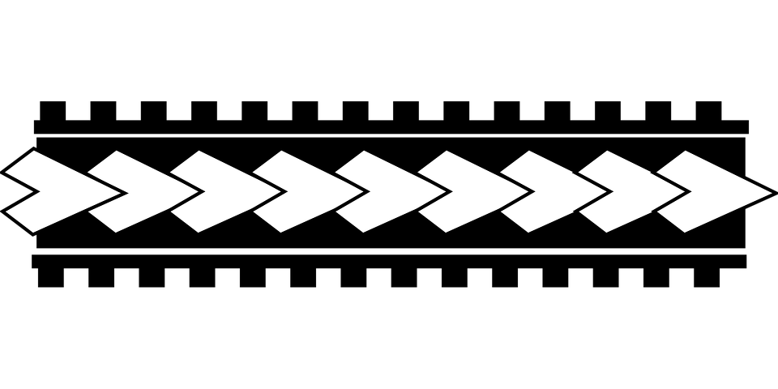

|  |
<< |
- |
Biografía |
- |
|
- |
>> |
>> BIOGRAFÍA DE VASÍLI KANDINSKY << |
(Vasíli o Wassily Kandinsky; Moscú, Rusia, 1866 - Neuilly-sur-Seine, 1944) Pintor de origen ruso (nacionalizado alemán y posteriormente francés), destacado pionero y teórico del arte abstracto. Kandinsky compaginó sus estudios de derecho y economía con clases de dibujo y pintura. Al tiempo que se interesaba por la cultura primitiva y las manifestaciones artísticas populares rusas, muy especialmente por el arte propio de la región de Volodga, rico en ornamentos, también descubrió la obra de Rembrandt y Monet. Cuando cumplió los treinta años, Kandinsky abandonó la docencia y fue a estudiar pintura a Munich, renunciando a un porvenir académico ya consolidado. En esta ciudad asistió a las clases de Franz von Stuck y en ellas conoció a Paul Klee, con el que mantendría una sincera y prolongada amistad. Su interés por el color está presente desde el comienzo de su carrera, y se puede apreciar en sus primeras pinturas la influencia del postimpresionismo, el fauvismo y el Jugendstil alemán.  Entre 1902 y 1907 Kandinsky realizó diferentes viajes a Francia, Países Bajos, Túnez, Italia y Rusia, para instalarse finalmente en Murnau, donde pintó una serie de paisajes alpinos entre los años 1908 y 1910. Tal como narra él mismo en su biografía, por entonces se dio cuenta de que la representación del objeto en sus pinturas era secundaria e incluso perjudicial, y que la belleza de sus obras residía en la riqueza cromática y la simplificación formal. Este descubrimiento le condujo a una experimentación continuada que culminó, a finales de 1910, con la conquista definitiva de la abstracción. Kandinsky refundió la libertad cromática de los fauvistas con la exteriorización del impulso vivencial del artista propuesto por los expresionistas alemanes de la órbita de Dresde, en una especie de síntesis teñida de lirismo, espiritualidad y una profunda fascinación por la naturaleza y sus formas. Entre 1910 y 1914, Kandinsky pintó numerosas obras que agrupó en tres categorías: las impresiones, inspiradas en la naturaleza; las improvisaciones, expresión de emociones interiores; y las composiciones, que aunaban lo intuitivo con el más exigente rigor compositivo. Estos cuadros se caracterizan por la articulación de gruesas líneas negras con vivos colores; en ellos todavía se percibe un poco la presencia de la realidad. En 1911 fundó junto a Franz Marc y August Macke el grupo Der Blaue Reiter, organizando diversas exposiciones en Berlín y Munich. Paralelamente a su labor creativa, reflexionó sobre el arte y su estrecho vínculo con el yo interior en muchos escritos, sobre todo en De lo espiritual en el arte (1910) y el Almanaque de Der Blaue Reiter, en el que, junto a dibujos y grabados de miembros del grupo, aparecían otras manifestaciones artísticas, como partituras de Schönberg (Kandinsky mantuvo una constante y fructífera relación con la música durante toda su vida) y muestras del arte popular e infantil. Al estallar la Primera Guerra Mundial, Kandinsky volvió a Moscú; allí emprendió varias actividades organizativas en el marco del Departamento de Bellas Artes del Comisariado Popular de la Educación. En 1917 se casó con Nina Andreievsky, y cuatro años más tarde se trasladó con ella a Alemania para incorporarse a la Bauhaus en la primera etapa de Weimar, donde continuaría como profesor hasta poco antes de su disolución. La influencia del entorno de la Bauhaus se dejó sentir, y su obra experimentó una transición hacia una mayor estructuración, tanto compositiva como formal, que se ha dado en llamar el período arquitectural de su pintura, al cual siguió otro de transición en que experimentó con los trazos circulares y concéntricos (Círculos, 1926). También escribió manifiestos para la Bauhaus y publicó el libro Punto y línea sobre el plano. En 1933, clausurada la Bauhaus por los nazis, el pintor se instaló en Francia. En esta última etapa de su vida continuó en su particular búsqueda de formas inventadas, que plasmó por medio de colores combinados de manera compleja e inspirándose en signos geométricos y en motivos decorativos eslavos, como hiciera ya al comienzo de su trayectoria pictórica. |
>> BIOGRAF�A DE VAS�LI KANDINSKY << |